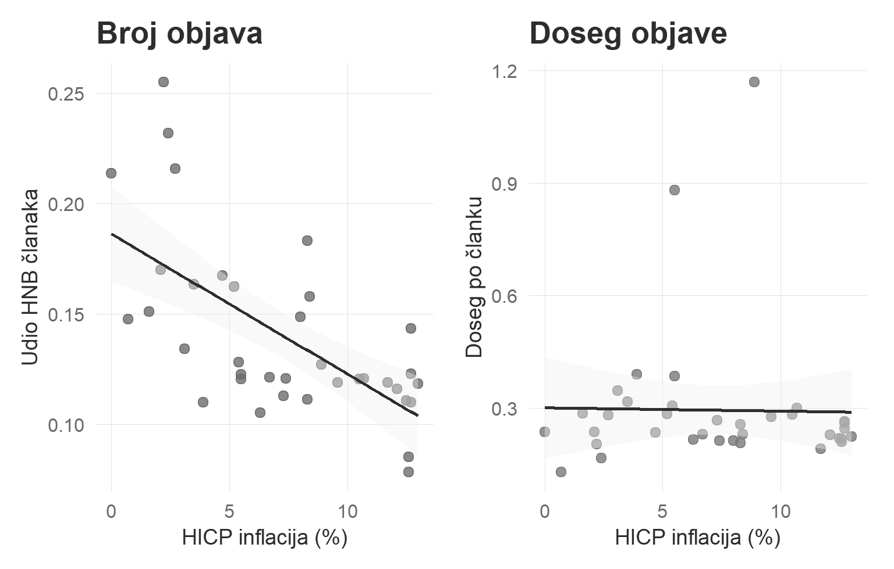
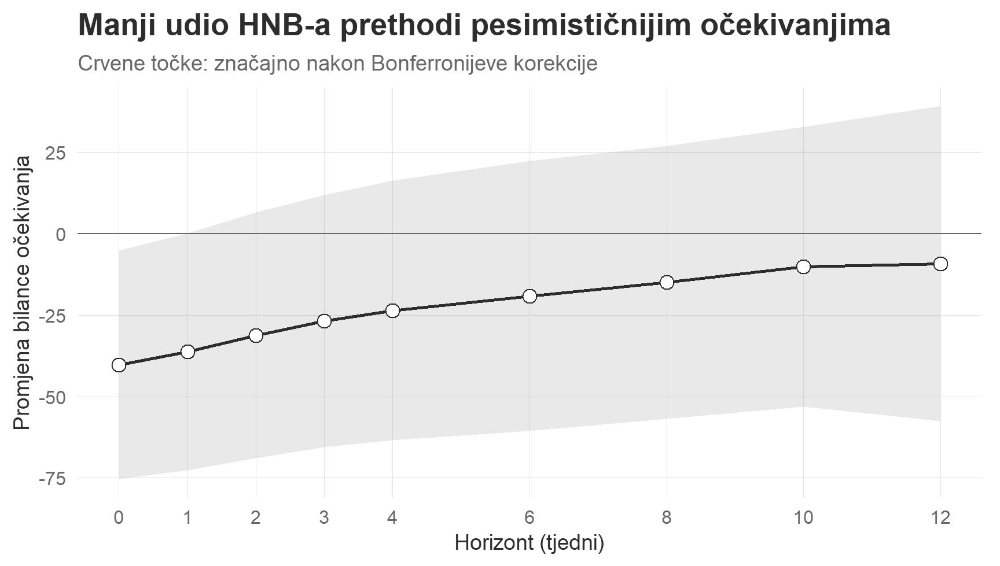
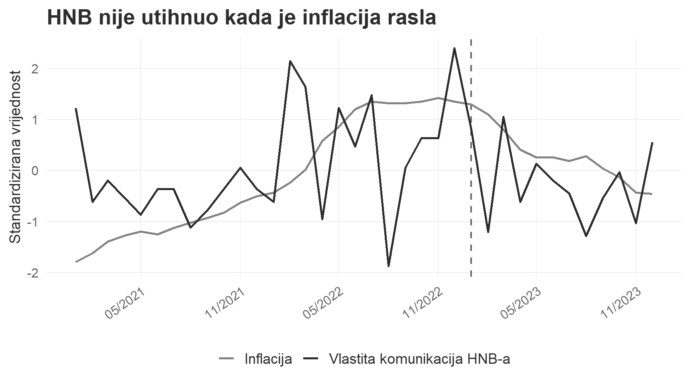

Medijska pažnja i inflacijska očekivanja u Hrvatskoj
Petra Palić · Luka Sikić
Hrvatsko katoličko sveučilište
EKONOMSKI SUSRETI 2026
Paradoks koji motivira rad
Kada je javnosti najpotrebnije objašnjenje inflacije, glas institucije odgovorne za stabilnost cijena postaje relativno manje vidljiv.
Ne pitamo komunicira li HNB dovoljno.
Pitamo koliko njegova poruka preživi konkurenciju za medijsku pažnju.
Hrvatska, 2021.–2023.
13,0%
vrhunac HICP inflacije
58.448
objava u primarnom HNB korpusu
↓
relativna vidljivost u diskursu o cijenama
EKONOMSKI SUSRETI 2026
Zašto je to ekonomski problem?
Signal središnje banke→Medijski filtar→Pažnja kućanstava→Inflacijska očekivanja→Ekonomske odluke
Standardni transmisijski kanal pretpostavlja da signal stigne do primatelja.
Naša teza: dostupnost signala zaseban je uvjet njegove učinkovitosti.
EKONOMSKI SUSRETI 2026
Pitanje i doprinos
Gubi li HNB medijsku vidljivost upravo kada inflacija raste — i je li taj gubitak povezan s očekivanjima kućanstava?
Tri doprinosa:
uvodimo institucionalni jaz u pažnji (IAG);
razdvajamo broj objava od dosega pojedine objave;
povezujemo medijsko istiskivanje s budućim inflacijskim očekivanjima.
EKONOMSKI SUSRETI 2026
Podatci: cijeli digitalni ekosustav, ne uzorak portala
Mediji
više od 19 milijuna digitalnih objava
1.239 jedinstvenih izvora
2021.–2023., mjesečna i tjedna agregacija
doseg, istaknutost, sentiment i mrežna pozicija
Ekonomija
hrvatski HICP i njegova promjena
eurozonski prehrambeni i energetski HICP
očekivanja potrošača iz EC BCS ankete
uvođenje eura 1. siječnja 2023.
EKONOMSKI SUSRETI 2026
Nova mjera: institucionalni jaz u pažnji
IAGt = s2021:I–VI − stHNB
gdje je stHNB dosegom i istaknutošću ponderiran udio HNB-a u diskursu o inflaciji.
IAG > 0: HNB je manje vidljiv od početne, niskoinflacijske razine.
Ekstenzivna margina: koliki je udio članaka o HNB-u.
Intenzivna margina: koliki je doseg pojedine objave.
EKONOMSKI SUSRETI 2026
Empirijska strategija i granice tvrdnji
Tvrdnja
Glavni dokaz
Status
Inflacija širi IAG
OLS + Newey–West; IV s EA hranom i energijom
IV-podržana kauzalna interpretacija
Istiskivanje djeluje kroz broj objava
Dekompozicija margina
mehanizam / asocijacija
Jaz prethodi promjeni očekivanja
Lokalne projekcije
prediktivno, ne kauzalno
Euro mijenja režim
Chowov test i interakcije
strukturni lom
EKONOMSKI SUSRETI 2026
Nalaz 1: viša inflacija, širi jaz
+0,0021
IAG jedinica na +1 postotni bod inflacije
≈ 12,9 %
opaženog raspona IAG-a pri skoku inflacije s 2% na 10%
Primarni tjedni model, uz kontrolu ukupnog medijskog volumena; p = 0,0002.
EKONOMSKI SUSRETI 2026
Nalaz 2: problem je učestalost, ne samo doseg

Na +1 postotni bod inflacije
−0,47 p.b.
promjena udjela HNB članaka
p = 0,012
Nema jasnog učinka
na doseg po članku
p = 0,346
Medijski filtar djeluje prvenstveno preko uredničke odluke koliko često uključiti HNB u priču o cijenama.
EKONOMSKI SUSRETI 2026
Nalaz 3: učestalost prethodi očekivanjima
Manji udio HNB-a prethodi pesimističnijim očekivanjima
Značajnost od 2. do 12. tjedna nakon Bonferronijeve korekcije

Dinamički obrazac
značajnost od 2. do 12. tjedna;
rezultat opstaje nakon Bonferronijeve korekcije;
robustan na linearnu i stepenastu interpolaciju očekivanja.
Manji udio članaka o HNB-u predviđa pesimističnija očekivanja.
Prediktivna veza — nije identificiran kauzalni učinak medijske izloženosti.
EKONOMSKI SUSRETI 2026
Alternativno objašnjenje: možda je HNB jednostavno manje komunicirao?

Podatci ne podupiru tu interpretaciju.
vlastita komunikacija HNB-a raste s inflacijom;
volumen ostaje stabilan nakon uvođenja eura;
jaz nastaje između institucionalne ponude i medijskog prijenosa.
EKONOMSKI SUSRETI 2026
Uvođenje eura mijenja mehanizam
Chowov test: F = 9,43; p < 0,001.
Inflacija: slabiji prediktor IAG-a nakon eura.
Sentiment: koeficijent je oko 3,3 puta snažniji.
Institucionalno tumačenje
Nakon prijenosa kamatnog instrumenta na ECB, komparativna prednost HNB-a prelazi sa signaliziranja odluke na autoritativno tumačenje domaćih kretanja cijena.
EKONOMSKI SUSRETI 2026
Koliko je nalaz robustan?
Instrumentalne varijable: eurozonska energija i hrana daju sličan učinak inflacije.
Difference-in-differences: HNB–HANFA usporedba oko eura podupire institucionalnu specifičnost.
Specifikacijske provjere: permutacije i specifikacijske krivulje podupiru tjedni rezultat.
Vladina komunikacija: smanjuje koeficijent za približno trećinu, ali ga ne uklanja.
Ponuda HNB komunikacije: ne objašnjava istiskivanje.
EKONOMSKI SUSRETI 2026
Od više priopćenja prema više neovisnih kontakata
Ekstenzivna margina
brža dostupnost stručnjaka za komentar;
kratki, podatkovno jasni materijali za urednike;
sustavna suradnja s regionalnim i specijaliziranim portalima;
pravodobno objašnjenje cost-push šokova.
Intenzivna margina
ciljani odnosi s izdavačima velikog dosega;
sadržaj prilagođen širokoj publici;
koordinirano povezivanje HNB i ECB poruka;
praćenje udjela glasa, ne samo broja vlastitih objava.
EKONOMSKI SUSRETI 2026
Što još ne znamo
Očekivanja su mjesečna i interpolirana na tjednu razinu.
Kanal IAG → očekivanja je prediktivan, ne eksperimentalno identificiran.
Kratak vremenski niz ograničava mjesečne testove i analizu režima.
Jedna zemlja i jedan inflacijski šok ograničavaju vanjsku valjanost.
Sljedeći test: panel malih članica europodručja i eksperimentalna varijacija medijske izloženosti.
EKONOMSKI SUSRETI 2026
Zaključak u jednoj rečenici
Kada inflacija raste, problem središnje banke nije samo što reći — nego hoće li njezin glas dovoljno često uopće doći do javnosti.
Inflacija širi institucionalni jaz u pažnji.
Istiskivanje djeluje prvenstveno kroz udio i učestalost objava.
Ta margina predviđa očekivanja kućanstava.
Nakon eura HNB-u ostaje ključna domaća uloga: tumačenje inflacije.
EKONOMSKI SUSRETI 2026
Hvala.
Pitanja i rasprava
Rad:Pasivno zamijenjena: cijena inflacije koju ne mjeri indeks potrošačkih cijena
Petra Palić · Luka Sikić
Hrvatsko katoličko sveučilište